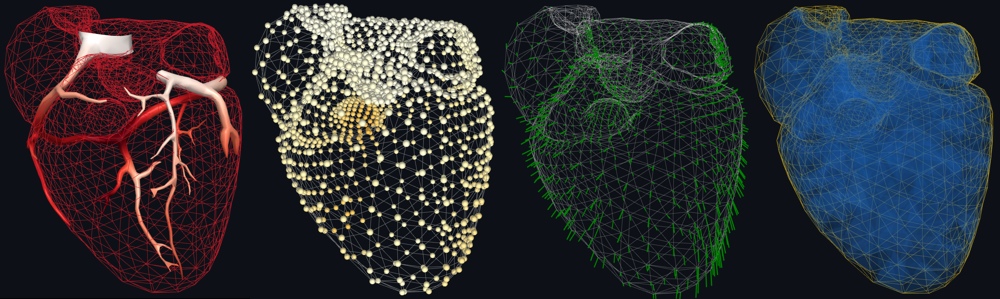

SimExporter
SimExporter is a Python module for creating 3D interactive scenes of various 3D objects using K3D and exporting a 3D plot or a 3D animation in a standalone HTML file.
This HTML file can then be shared and opened in any browsers and laptop, it can also be easily integrated into a website or presentation slides.

Features
SimExporter provides a lightweight, user-friendly API to create 3D objects:
Create various 3D object types: meshes, points, vectors;
Associate time series to the 3D objects.
Then, the scene containing the 3D objects can be exported in a standalone HTML file:
Export a static plot of the 3D objects;
Export an animation using the time series associated to the 3D objects.
Gallery
Try an integrated animation on our team website !